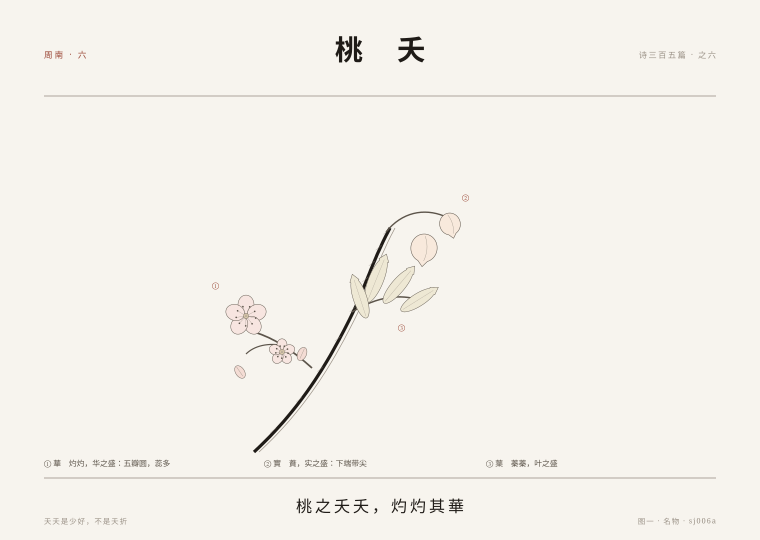
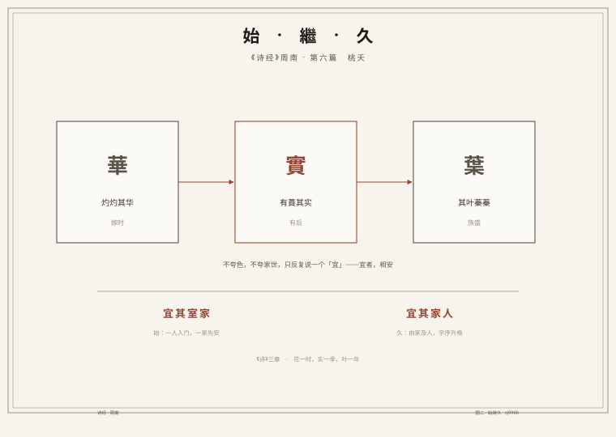

第六篇 桃夭
周南 · 之六 SJ006
朗读 · 普通话
依经文正文朗读，句读从文；不配乐、不改速、不加拖腔。
一 解题
诗三判：
- 谁在说：一群在婚礼上唱歌的人。三章都以「桃之夭夭」起，都以「之子于归」承，都以「宜」字收——这是合唱的口吻，不是独白。
- 说什么事：一个女子出嫁。诗不写她的脸，只写桃：花、实、叶。三样都盛，三样都「夭夭」。祝辞只有一句——宜。
- 为何编在此：前五篇从夫妇之始说到后嗣。此篇回到「嫁」的那一刻，把「始」写足。周南的次序是：先立其始（关雎），再述其常（葛覃），再写其变（卷耳），再立其序（樛木、螽斯），然后回到人事最亮的一天——婚。
《毛序》：「《桃夭》，后妃之所致也。不妒忌，则男女以正，婚姻以时，国无鳏民也。」——把一首婚歌读成「后妃之化」的成效。
朱子《诗集传》：「兴也。桃之有华，正婚姻之时也。」——「周礼，仲春令会男女，桃之有华，正婚姻之时」，故以桃起兴。
本库的看法：这是一首婚歌，「宜」是题眼。
全篇不夸容貌，不夸家世，只反复说一个「宜」——宜其室家、宜其家室、宜其家人。古人把婚姻的善，定义为「相宜」，不是「相配」，更不是「相悦」。这个字比「美」重，也比「爱」稳。
二 经文
第一章
桃之夭夭，灼灼其華。之子于歸，宜其室家。
第二章
桃之夭夭，有蕡其實。之子于歸，宜其家室。
第三章
桃之夭夭，其葉蓁蓁。之子于歸，宜其家人。
分章：毛传、朱子皆三章，章四句。三章只换六个字：灼灼其华／有蕡其实／其叶蓁蓁，室家／家室／家人。末章「家人」是升格——前两章说「家」，末章说「人」。
三 韵读
| 一 |
華、家 |
魚部 |
| 二 |
實、室 |
質部 |
| 三 |
蓁、人 |
真部 |
三章三韵，一章一换。魚部开口大，質部短促，真部收鼻——一章亮，二章实，三章长。第二章的「实、室」是入声，念起来一顿一顿，正好配「果实累累」那种压枝的沉。第三章转真部，声一放开，是「家人」的舒展。
四 字义名物
- 夭夭——少好貌，少而美。朱子「少好之貌」；毛传「其少壮也」。与「夭折」之「夭」无关，古今义相反，最易误读。
- 灼灼——华之盛。《毛传》「灼灼，华之盛也」。火光貌，形容花色明烈。
- 蕡（fén）——实之大、实之盛。《毛传》「蕡，实貌」。
- 蓁蓁（zhēn）——叶盛貌。《毛传》「蓁蓁，至盛貌」。
- 之子——这个女子，指出嫁者。
- 于歸——往嫁。归，女子以夫家为归。
- 宜——和顺、相安。不是「美丽」，不是「配得上」。
- 室家／家室——同义倒文，为协韵。一家之人。
- 家人——一家之人；末章升格，由「家」及「人」。
五 今译
第一章
桃树少而美，花开得明烈烈。这位姑娘出嫁了，和顺她的一家。
第二章
桃树少而美，果实结得沉甸甸。这位姑娘出嫁了，和顺她的家室。
第三章
桃树少而美，叶子长得密丛丛。这位姑娘出嫁了，和顺她家中的人。
译注：「宜」一律译为「和顺」，不作「使……适宜」的使劲解——它说的是这个人的质地，不是她的功能。
六 章旨
一章：嫁时。桃花正盛，是仲春嫁娶之时。此章写「始」，以花之明烈，比人之少好。
二章：结果。实之沉，是「有后」的预兆。此章写「继」，祝辞从「室家」转到「家室」——字序一倒，重心落到「室」，即内室、即生育之所。
三章：繁茂。叶之密，是「族」的象。此章写「久」，收在「家人」——不是一家之屋，是一屋之人。
三章之序，表面是「花—实—叶」，骨子里是「始—继—久」。花是一时，实是一季，叶是一年。桃的三种盛，恰好配婚的三种祝。
七 诗教
- 兴：以桃起兴，且桃之为物，正当婚时（仲春）。兴象不是随手取的，它带着时令。
- 观：可观古人论婚的标准——不取「色」，取「宜」。一首写新娘的诗，通篇不写新娘，只写她将使一家相安。这是极成熟的婚观。
- 群：此篇是婚礼的常用辞。三千年来，凡嫁娶，几乎都在这四句的延长线上。「宜室宜家」成为成语，不是偶然。
- 怨：此篇无怨。它是三百篇里最亮的一篇，亮到几乎没有阴影——但也正因如此，它容易被读成「喜气」，而漏掉那个「宜」字的分量。
八 分寸与边界
- 不可把「夭夭」读成「夭折」。此字古今义相反：今日「夭」是短命，此处「夭夭」是少而美。一字读反，全篇由喜转丧。
- 不可把「宜」读成「美貌配得上」。宜是和顺，是「使一家相安」的质地；若读成容貌，此诗就降格为一首夸新娘漂亮的歌。
- 不可把三章硬读成严格时序。花、实、叶并非一条时间线（花在实前，叶与实同时），三章取的是桃的三种「盛」，不是桃的一生。要说时序，是「始—继—久」的祝辞之序，不是植物学之序。
- 不可把「之子于归」读成「回娘家」。归是出嫁，以夫家为归；「归宁」才是回娘家（见《葛覃》）。
- 不可把《毛序》「后妃之所致」当作定论，也不可全然抹去。它是汉人的读法，把婚歌纳入教化系统；今日读此篇，当作婚歌读更近诗心，但不妨知道它曾被这样读过。
九 存疑
- 「夭夭」之训：朱子「少好之貌」，毛传「少壮」，一说「美盛」。三义相通而侧重不同，本库取「少好」。
- 「蕡」之训：毛传「实貌」，一说「实大」，一说「赤色」（蕡通「贲」）。本库取「实之盛」。
- 三章是否时序：见分寸第三条。
- 「室家」「家室」之倒：一说纯为协韵（家、室与华、实押），一说倒文见义（先室后家，见内外之别）。本库从前说为主。
- 是否后妃之化：毛序以为文王教化之效；今人多以为民间婚歌，被采入乐。诗无证，本库不指实，只认它是「婚时之歌」。
十 跨典
- 《周南·关雎》：「窈窕淑女，君子好逑。」——彼为求，此为嫁。周南的婚，从「求」写到「归」，首尾相衔。
- 《周南·螽斯》：「宜爾子孫。」——同一个「宜」字。桃夭祝其「宜家」，螽斯祝其「宜子孙」，一在始，一在续。
- 《礼记·昏义》：「昏礼者，将合二姓之好，上以事宗庙，而下以继后世也。」——婚礼之义，全在此篇所祝的「室家」与「家人」之间。
- 《周易·家人·彖》：「家人，女正位乎内，男正位乎外……正家而天下定矣。」——「宜其家人」四字，是《家人》卦的一行注。
- 《召南·摽有梅》：「求我庶士，迨其吉兮。」——「婚姻以时」的另一种写法：彼是待嫁者的急，此是已嫁者的宜。一急一安，同一时令。
十一 双卡与图
双卡五对：
| 桃之夭夭（物） |
之子于归（人） |
| 灼灼其華（花） |
宜其室家（始） |
| 有蕡其實（实） |
宜其家室（继） |
| 其葉蓁蓁（叶） |
宜其家人（久） |
| 少好 |
相宜 |

图一 · 桃花桃实桃叶 名物图

图二 · 宜为始继久 义理图
读图三处：
- 花五瓣：桃为五瓣花，图中一花正面、一花侧面。正面见其盛，侧面见其少——「夭夭」与「灼灼」是两件事，一在质，一在量。
- 实带尖：桃实下端微尖，是桃之所以为桃。图中只画两枚，压枝下垂，是「蕡」字的分量，不是数量。
- 叶细长：桃叶狭长如柳而宽，边缘有细齿。图取三片，一正一侧一背，密而不乱，是「蓁蓁」的写法。